Consultoría en Ingeniería Civil
- Asesoría y Acompañamiento a las Secretarías de Planeación e Infraestructura Desarrollo urbano
- Planeamiento en desarrollo urbano: Se ha realizado la revisión y ajuste de Esquemas de Ordenamiento Territorial – EOT, para algunas entidades gubernamentales.
Supervisoría, Interventoría: Se ha realizado la supervisoría en la ejecución de proyectos Civiles tales como Colegios, Hospitales, Centros de Salud, Vías, Red Hidráulicas y Sanitarias de Urbanizaciones, Túnel Liners, Diseños de obras civiles.
Topografía; Se cuenta con estaciones total de última generación, niveles de precisión, GPS de Alta precisión Monofrecuencia y GPS de mano.
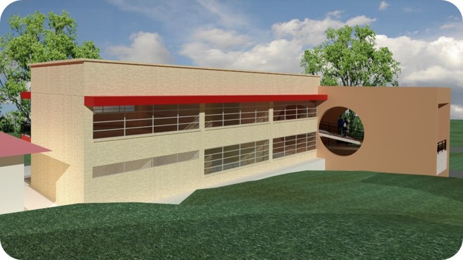 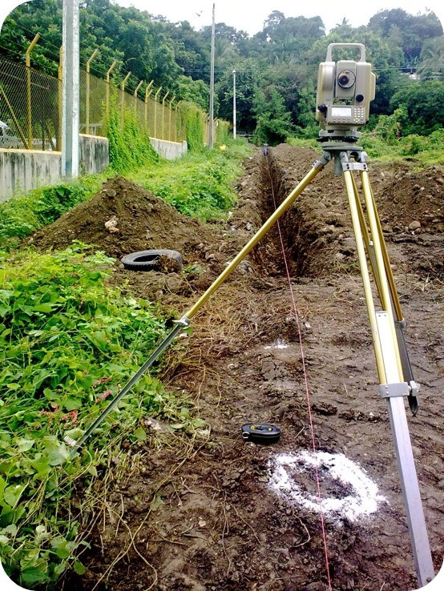Desarrollo urbano Planeación, Diseños de ingeniería y aplicaciones en proyectos de vivienda: Se han realizado varias proyectos de vivienda, donde se incluye Diseños arquitectónicos, Estructurales, de Urbanismo, Urbanismo Eléctrico, Sanitario Residual, Sanitario Aguas lluvias y Potable. Estos proyectos han sido realizados en Municipio como:
- Girardot: (Villas del Sol - 20 Viviendas).
- Melgar – Ricaurte: (Pacolí - 153 Viviendas).
- Tocaima: (Maroa - 90 Viviendas) y GoldCup (105 Lotes), Verdeterra (31 Viviendas).
- Viotá: (VIS Brisas del Tequendama - 350 Viviendas), BlackMont (64 Apartamentos).
- Nilo: (Mauco - 20 Viviendas).
Obras Civiles Hidráulicas
Aguas subterráneas y pozos profundos: En consorcio con compañías de perforación y con el objeto de solucionar problemas de suministro de Agua en Condominios campestres, se han construido, mantenido y restaurado pozos profundos para la extracción de aguas subterráneas.
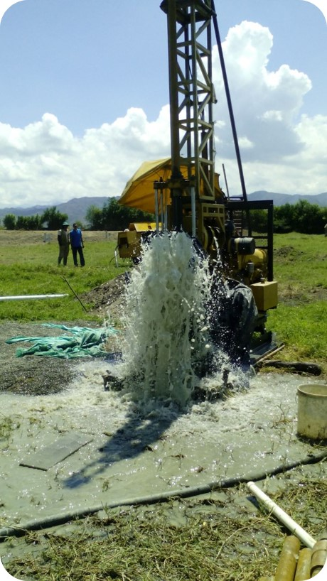 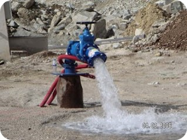Obras sanitarias y de urbanismo
Redes de distribución de agua potable: Se ha llevado a cabo la instalación de más de 4.000 metros de tubería de agua potable PAVCO y TUBOSA con diámetros máximo de 3 pulgadas y se han instalado más de 240 m en tuberías de alta presión con diámetros mayores a 6 pulgadas.
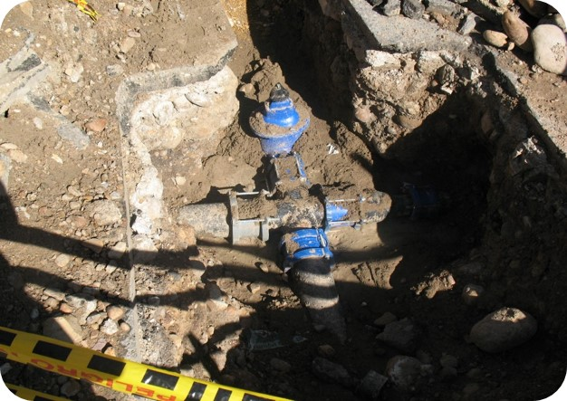 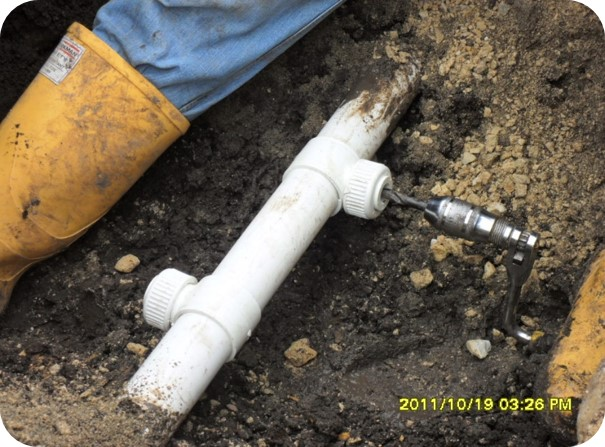 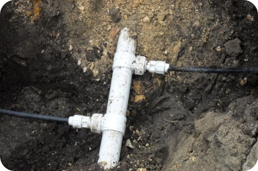Redes de distribución de aguas servidas: En aguas servidas y donde no solamente tenemos en cuenta las aguas residuales, sino las lluvias, se ha instalado más de 3.000 m de tubería en diámetros de 8” a 36”, tubería por túnel liner, construcción de pozos de inspección.
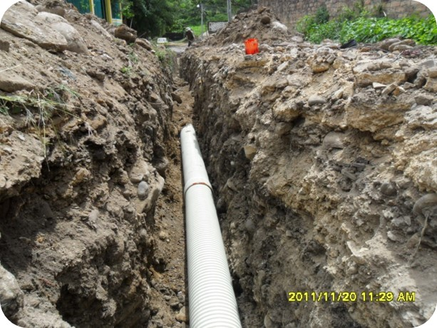 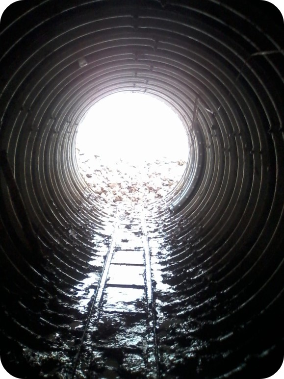Obras institucionales
Hospitales, Centros de Salud: Se ha realizado la construcción, remodelación, mantenimiento y adecuación de Hospitales y Centros de Salud.
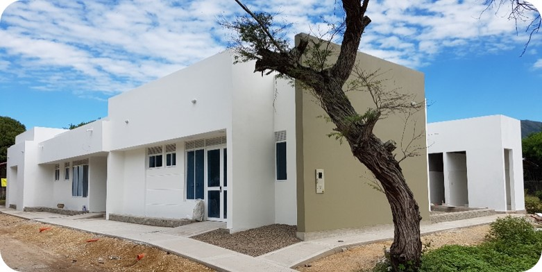 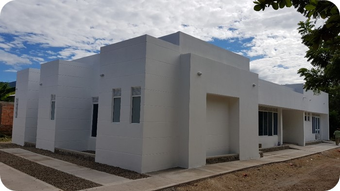 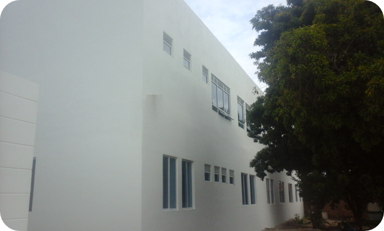 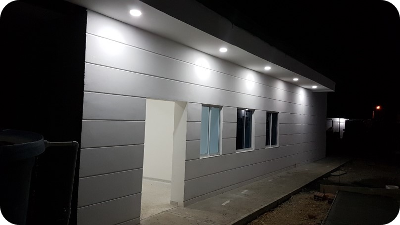Centros Educativos y de formación: Se ha realizado la construcción, remodelación, adecuación y mantenimiento de Obras Institucionales Educativas.
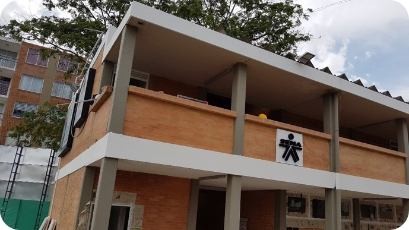 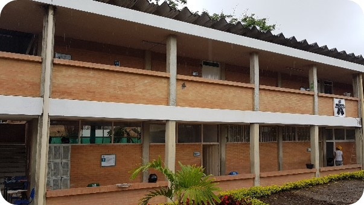 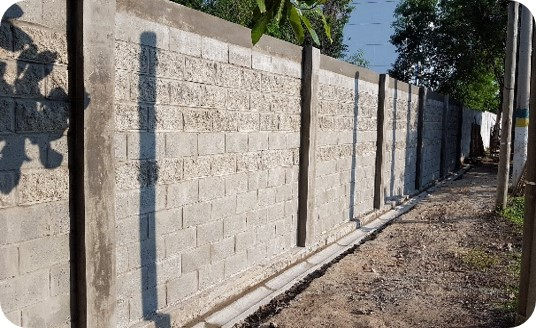 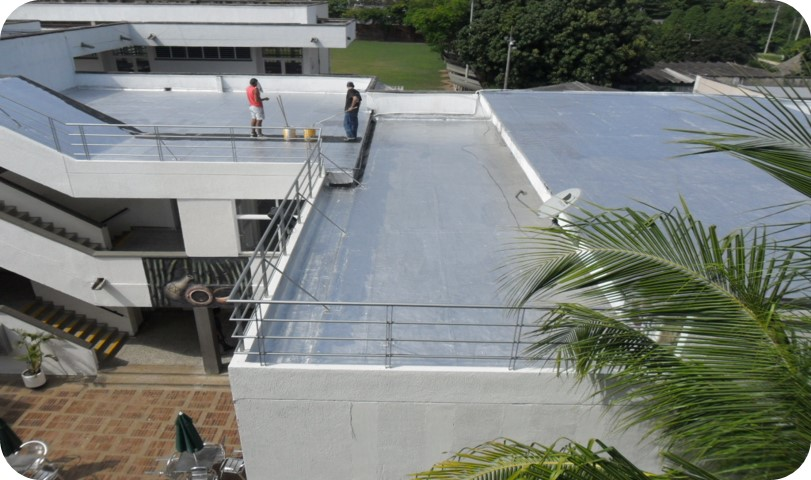 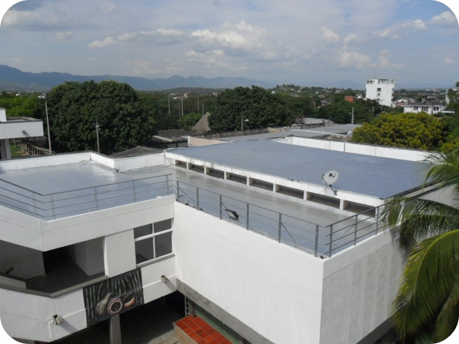Obras civiles de transporte
Vías de comunicación en Adoquín de Arcilla: En su mayoría la estructura de las vías construidas han sido en sub base, recebo seleccionado, arena y adoquín, se tiene un poco más de 18.000 m2 y pavimentos rígidos.
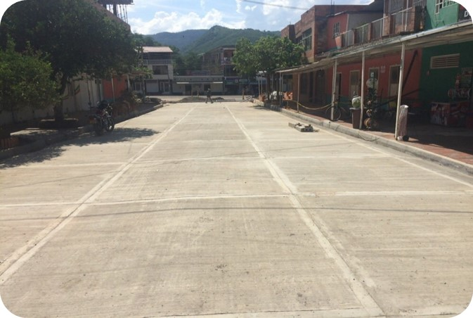 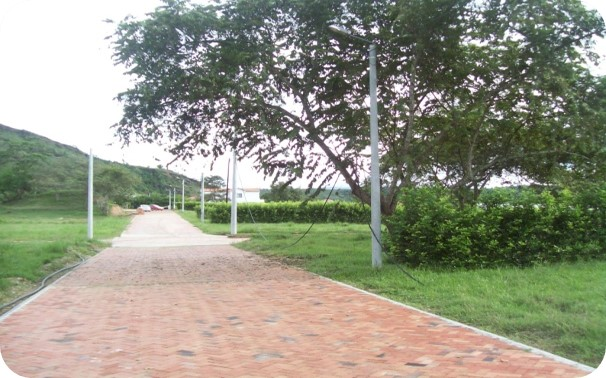 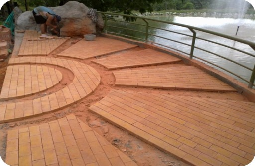Vías de comunicación en Placa Huella. Construcciones en Adoquín.
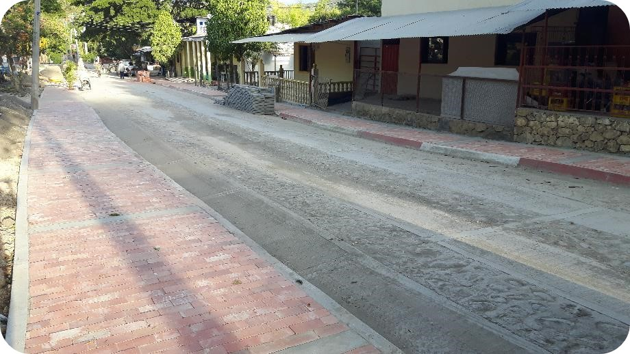 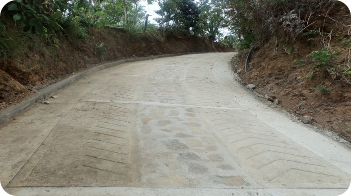 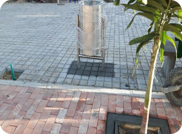Construcción de Puentes: Se ha llevado a cabo la construcción de más de 3 puentes.
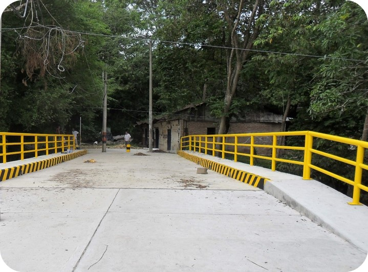 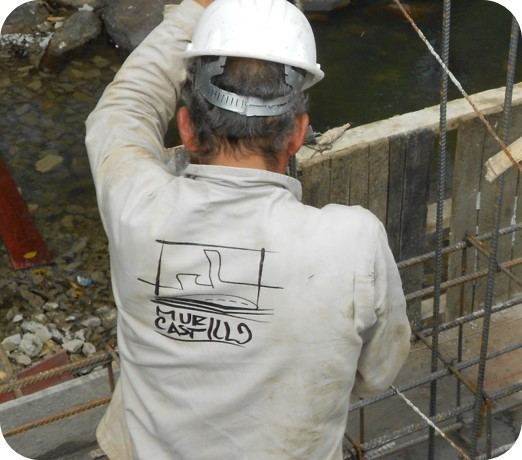 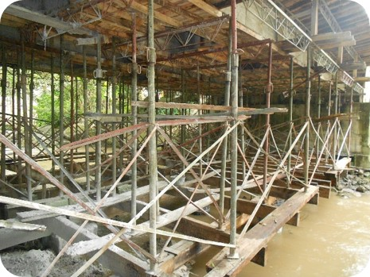